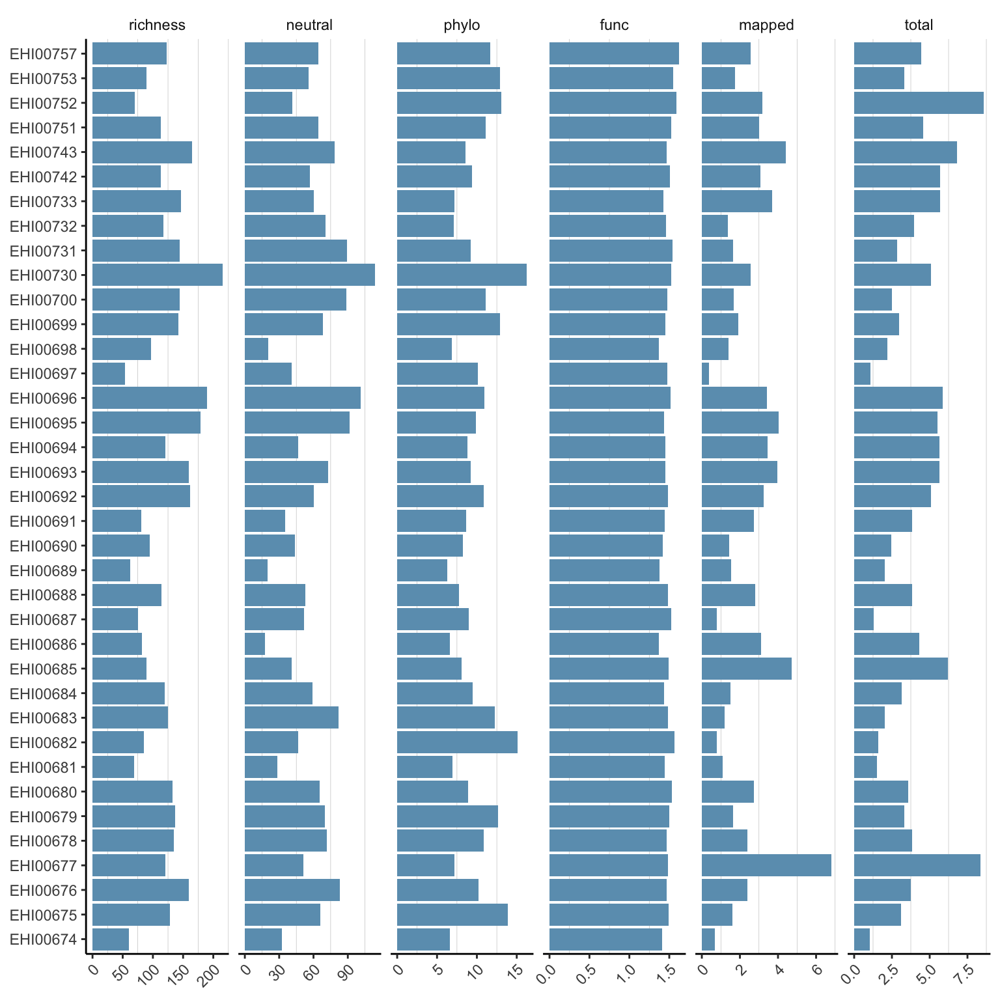
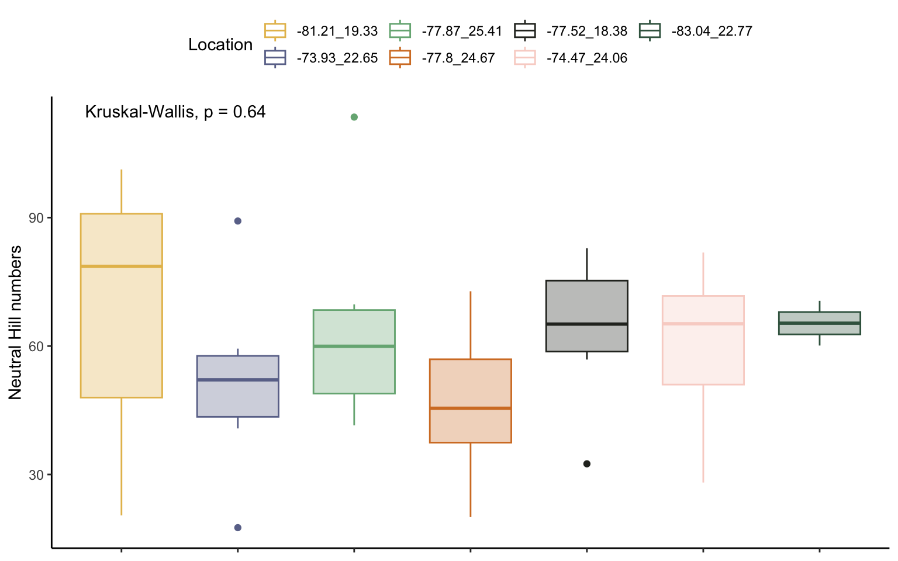
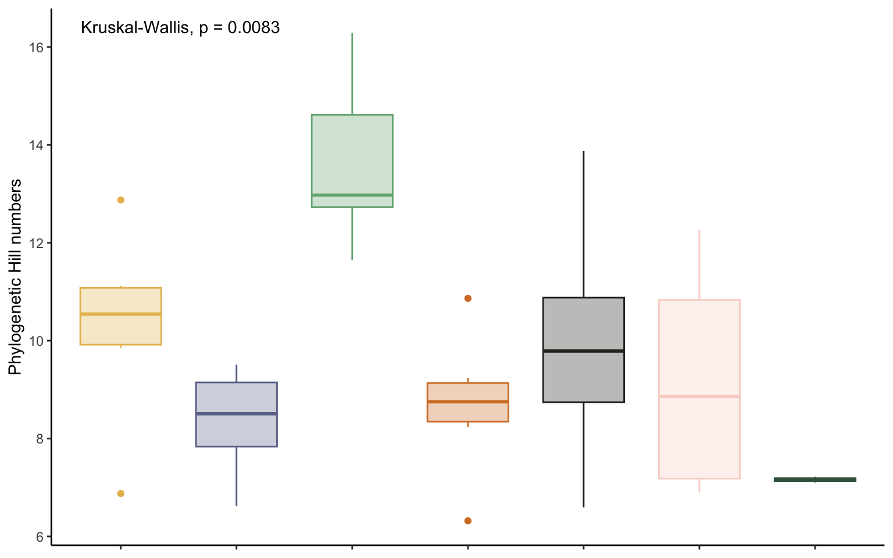
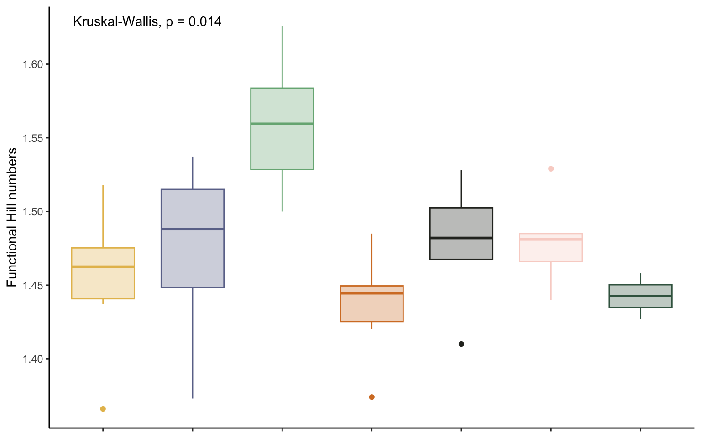
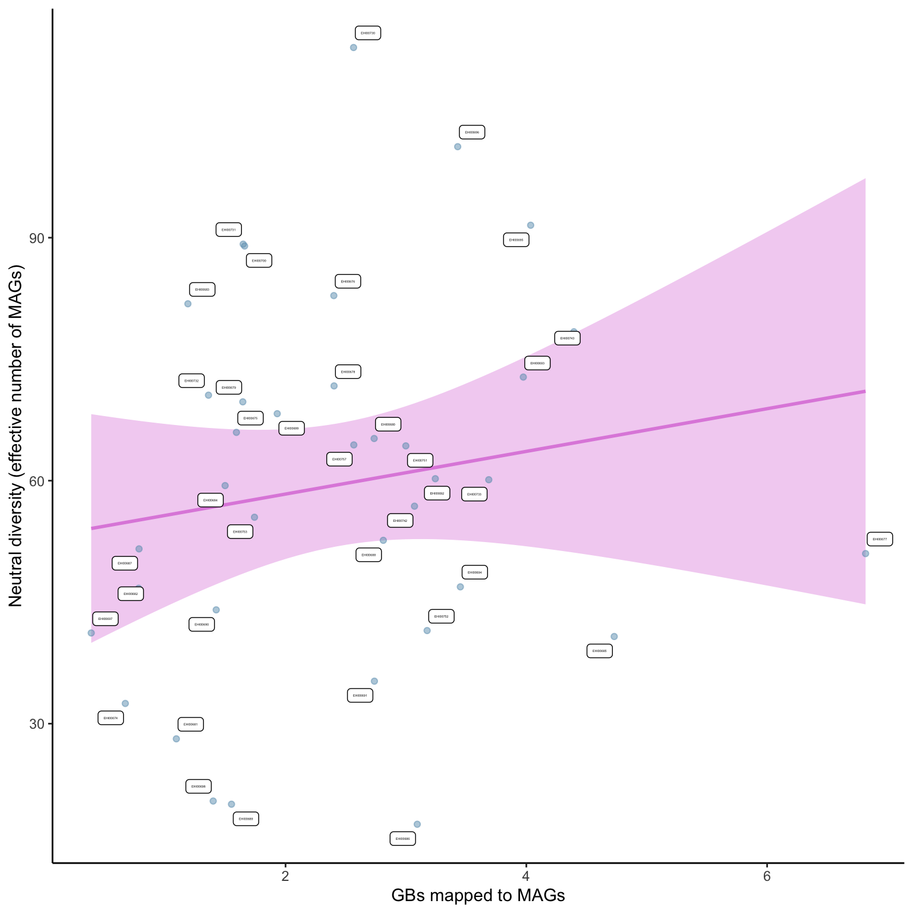
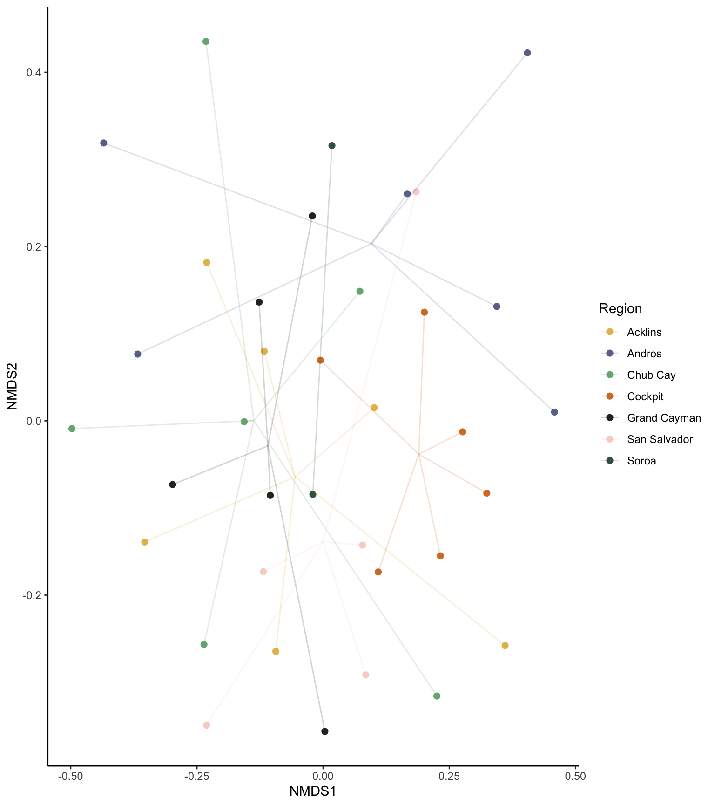

Chapter 7 Diversity analyses
This workflow performs diversity analyses of the count data generated through the EHI pipeline. Note the workflow relies on previous scripts, so make sure you go through the general pipeline before starting working on this document.
7.1 Data preparation
In order to avoid issues with diversity computation is recommendable to remove samples and MAGs without count data.
#Get list of present MAGs
present_MAGs <- count_table_cov_size %>%
filter(rowSums(.[, -1]) != 0) %>%
rownames()
#Remove samples with all zeros (no data after filtering)
count_table_cov_size <- count_table_cov_size %>%
select_if(~!all(. == 0))
#Align KEGG annotations with present MAGs and remove all-zero and all-one traits
present_MAGs <- present_MAGs[present_MAGs %in% rownames(kegg_table)]
kegg_table_filt <- kegg_table[present_MAGs,] %>%
select_if(~!all(. == 0)) %>% #remove all-zero modules
select_if(~!all(. == 1)) #remove all-one modules
#Filter count table to only contain present MAGs after KEGG filtering
count_table_cov_size_filt <- count_table_cov_size[present_MAGs,]7.2 Alpha diversity
Alpha diversity metrics
q0n <- hilldiv(count_table_cov_size,q=0) %>% c()
q1n <- hilldiv(count_table_cov_size,q=1) %>% c()
q1p <- hilldiv(count_table_cov_size,q=1,tree=tree) %>% c()
dist <- traits2dist(kegg_table_filt, method="gower")
q1f <- hilldiv(count_table_cov_size_filt,q=1,dist=dist) %>% c()
# Merge all metrics
alpha_div <- cbind(sample=colnames(count_table_cov_size),richness=q0n,neutral=round(q1n,3),phylo=round(q1p,3),func=round(q1f,3)) %>%
as.data.frame()
columns <- c("richness","neutral","phylo","func","mapped","total")
# Add amount of sequencing data to the table
alpha_div <- alpha_div %>%
left_join(sequence_fractions, by = join_by(sample == sample)) %>% #add sequencing depth information
mutate(mapped=round(mags_bases/1000000000,3)) %>% #modify depth to million reads
mutate(total=round((mags_bases+unmapped_bases+host_bases+lowqual_bases)/1000000000,3)) %>%
select(sample,richness,neutral,phylo,func,mapped,total) %>%
mutate(across(-1, as.numeric))Alpha diversity plots
alpha_div %>%
pivot_longer(-sample, names_to = "data", values_to = "value") %>%
mutate(data = factor(data, levels = columns)) %>%
ggplot(aes(x=value, y=sample)) +
geom_bar(stat='identity', fill="#6c9ebc") +
facet_wrap(~data, scales="free_x", ncol=6) +
theme_classic() +
theme(
strip.background = element_blank(),
panel.grid.minor.x = element_line( size=.1, color="grey" ),
axis.title.x = element_blank(),
axis.title.y = element_blank(),
axis.text.x = element_text(angle = 45, hjust = 1)
)
You can also generate an HTML table using knitr.
| sample | richness | neutral | phylo | func | mapped | total |
|---|---|---|---|---|---|---|
| EHI00696 | 190 | 101.237 | 10.960 | 1.518 | 3.430 | 5.868 |
| EHI00687 | 75 | 51.579 | 8.942 | 1.523 | 0.783 | 1.297 |
| EHI00757 | 123 | 64.415 | 11.643 | 1.626 | 2.567 | 4.455 |
| EHI00686 | 82 | 17.581 | 6.624 | 1.373 | 3.094 | 4.307 |
| EHI00693 | 159 | 72.791 | 9.241 | 1.450 | 3.975 | 5.656 |
| EHI00697 | 54 | 41.198 | 10.126 | 1.476 | 0.386 | 1.067 |
| EHI00688 | 114 | 52.637 | 7.758 | 1.485 | 2.812 | 3.850 |
| EHI00730 | 215 | 113.479 | 16.288 | 1.521 | 2.565 | 5.078 |
| EHI00692 | 162 | 60.243 | 10.864 | 1.485 | 3.244 | 5.099 |
| EHI00676 | 159 | 82.850 | 10.203 | 1.469 | 2.401 | 3.758 |
| EHI00682 | 85 | 46.715 | 15.128 | 1.568 | 0.780 | 1.596 |
| EHI00679 | 137 | 69.732 | 12.678 | 1.500 | 1.645 | 3.306 |
| EHI00690 | 95 | 44.051 | 8.235 | 1.420 | 1.424 | 2.459 |
| EHI00683 | 125 | 81.839 | 12.258 | 1.481 | 1.189 | 2.022 |
| EHI00733 | 147 | 60.117 | 7.219 | 1.427 | 3.688 | 5.706 |
| EHI00685 | 89 | 40.760 | 8.071 | 1.491 | 4.730 | 6.188 |
| EHI00752 | 70 | 41.494 | 13.077 | 1.589 | 3.176 | 8.595 |
| EHI00681 | 69 | 28.127 | 6.909 | 1.440 | 1.093 | 1.528 |
| EHI00700 | 144 | 88.972 | 11.118 | 1.473 | 1.660 | 2.480 |
| EHI00680 | 132 | 65.208 | 8.859 | 1.529 | 2.736 | 3.559 |
| EHI00751 | 113 | 64.296 | 11.104 | 1.528 | 2.999 | 4.552 |
| EHI00742 | 113 | 56.852 | 9.372 | 1.505 | 3.071 | 5.697 |
| EHI00675 | 128 | 65.964 | 13.873 | 1.495 | 1.592 | 3.102 |
| EHI00732 | 117 | 70.557 | 7.101 | 1.458 | 1.360 | 3.986 |
| EHI00684 | 120 | 59.392 | 9.508 | 1.436 | 1.498 | 3.132 |
| EHI00694 | 121 | 46.891 | 8.820 | 1.448 | 3.452 | 5.636 |
| EHI00743 | 165 | 78.383 | 8.533 | 1.467 | 4.395 | 6.805 |
| EHI00731 | 144 | 89.203 | 9.214 | 1.537 | 1.648 | 2.853 |
| EHI00698 | 97 | 20.448 | 6.877 | 1.366 | 1.399 | 2.199 |
| EHI00699 | 142 | 68.270 | 12.874 | 1.452 | 1.931 | 2.983 |
| EHI00674 | 60 | 32.495 | 6.593 | 1.410 | 0.669 | 1.039 |
| EHI00753 | 89 | 55.487 | 12.870 | 1.551 | 1.742 | 3.324 |
| EHI00695 | 179 | 91.539 | 9.847 | 1.437 | 4.036 | 5.528 |
| EHI00678 | 135 | 71.700 | 10.831 | 1.466 | 2.403 | 3.815 |
| EHI00689 | 62 | 20.056 | 6.318 | 1.374 | 1.551 | 2.029 |
| EHI00677 | 121 | 50.998 | 7.182 | 1.485 | 6.818 | 8.344 |
| EHI00691 | 81 | 35.247 | 8.681 | 1.441 | 2.738 | 3.846 |
Alpha diversity comparisons
Alpha diversities can be compared across any categorical features that group analysed samples (e.g., localities, sampling seasons, sex), or continuous variables associated with the host animals.
Let’s first create a nice colour palette for the localities
Let’s also identify the number of comparing groups, so that the colour palette can be subsetted properly when plotting the figures.
group_n <- alpha_div %>% select(sample,neutral) %>%
left_join(sample_table, by = join_by(sample == sample)) %>%
mutate(location=paste0(round(longitude,2),"_",round(latitude,2))) %>%
select(location) %>% pull() %>% unique() %>% length()Neutral diversity
alpha_div %>%
select(sample,neutral) %>%
pivot_longer(-sample, names_to = "data", values_to = "value") %>%
mutate(data = factor(data, levels = columns)) %>%
left_join(sample_table, by = join_by(sample == sample)) %>%
mutate(location=paste0(round(longitude,2),"_",round(latitude,2))) %>%
ggboxplot(., x = "location", y = "value", color = "location", fill="location") +
scale_color_manual(values=alpha_colors[c(1:group_n)]) +
scale_fill_manual(values=paste0(alpha_colors[c(1:group_n)],"50")) +
stat_compare_means() +
theme_classic() +
labs(y = "Neutral Hill numbers") +
theme(
legend.position = "top",
legend.box = "horizontal",
axis.title.x = element_blank(),
axis.text.x = element_blank()) +
guides(color=guide_legend(title="Location"), fill="none")
Phylogenetic diversity
alpha_div %>%
select(sample,phylo) %>%
pivot_longer(-sample, names_to = "data", values_to = "value") %>%
mutate(data = factor(data, levels = columns)) %>%
left_join(sample_table, by = join_by(sample == sample)) %>%
mutate(location=paste0(round(longitude,2),"_",round(latitude,2))) %>%
ggboxplot(., x = "location", y = "value", color = "location", fill="location") +
scale_color_manual(values=alpha_colors[c(1:group_n)]) +
scale_fill_manual(values=paste0(alpha_colors[c(1:group_n)],"50")) +
stat_compare_means() +
theme_classic() +
labs(y = "Phylogenetic Hill numbers") +
theme(
legend.position = "none",
axis.title.x = element_blank(),
axis.text.x = element_blank())
Functional diversity
alpha_div %>%
select(sample,func) %>%
pivot_longer(-sample, names_to = "data", values_to = "value") %>%
mutate(data = factor(data, levels = columns)) %>%
left_join(sample_table, by = join_by(sample == sample)) %>%
mutate(location=paste0(round(longitude,2),"_",round(latitude,2))) %>%
ggboxplot(., x = "location", y = "value", color = "location", fill="location") +
scale_color_manual(values=alpha_colors[c(1:group_n)]) +
scale_fill_manual(values=paste0(alpha_colors[c(1:group_n)],"50")) +
stat_compare_means() +
theme_classic() +
labs(y = "Functional Hill numbers") +
theme(
legend.position = "none",
axis.title.x = element_blank(),
axis.text.x = element_blank())
Relationship between alpha diversity and sequencing effort
The microbial diversity in a sample is often correlated with sequencing depth, mainly when the sequencing effort is not large enough to properly capture the entirety of the diversity in the sample. The following plot shows the relationship between neutral diversity (Hill number of q=1, Shannon diversity) and the GBs mapped to the MAG catalogue. The size of the dots indicates the total sequencing effort performed for that sample (including host DNA, non-mapped reads, etc.). The flatter the regression line the lower is the correlation, and thus lower is the effect of sequencing depth in the results. However, it must be noted that this analysis only compares the sequencing depth in relation to the MAG catalogue, which might not be complete or representative of the system. Hence, the results shown here must be interpreted cautiously.

7.3 Beta diversity
Pairwise beta diversities quantify the dissimilarity between samples. Within the Hill numbers framework, beta diversities can be calculated for neutral, phylogenetic and functional diversities, at the desired order of diversity (q-value). Often times, beta diversities differ depending on the components of the diversity. For instance, phylogenetic and functional diversities often display lower beta values than neutral diversities due to phylogenetic and functional redundancy of the microbiota (i.e. different yet closely related and functionally similar MAGs replace each other). Pairwise beta diversities can be displayed in a 2-dimensional ordination using NMDS, and can be used to test for compositional differences between variables of interest. Note that outliers (often technical failures) can distort the ordination considerably.
Beta diversity test
| Df | SumOfSqs | R2 | F | Pr(>F) | |
|---|---|---|---|---|---|
| location | 6 | 1.3247170 | 0.1191033 | 0.6509051 | 0.997 |
| sex | 1 | 0.3001424 | 0.0269853 | 0.8848571 | 0.652 |
| Residual | 28 | 9.4975634 | 0.8539114 | NA | NA |
| Total | 35 | 11.1224228 | 1.0000000 | NA | NA |
Beta diversity plot
group_n <- length(unique(beta_q1n_nmds$region))
beta_q1n_nmds %>%
group_by(region) %>%
mutate(x_cen = mean(NMDS1, na.rm = TRUE)) %>%
mutate(y_cen = mean(NMDS2, na.rm = TRUE)) %>%
ungroup() %>%
ggplot(., aes(x=NMDS1,y=NMDS2, color=region)) +
scale_color_manual(values=beta_colors[c(1:group_n)]) +
geom_point(size=2) +
geom_segment(aes(x=x_cen, y=y_cen, xend=NMDS1, yend=NMDS2), alpha=0.2) +
theme_classic() +
theme(legend.position="right", legend.box="vertical") +
guides(color=guide_legend(title="Region"))